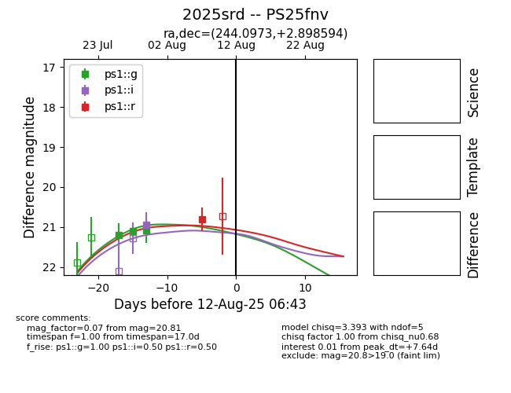

Target 2025srd at 2025-08-12 06:56, see:
TNS: wis-tns.org/object/2025srd
YSE: ziggy.ucolick.org/yse/transient_detail/2025srd
alt names
2025srd (yse,tns)
PS25fnv (panstarrs)
coordinates:
equatorial (ra, dec) = (244.0973,+2.89859)
galactic (l, b) = (15.7956,+35.41941)
photometry
last ps1::g=21.07, ps1::i=20.94, ps1::r=20.81
3 ps1::g, 1 ps1::i, 1 ps1::r detections
